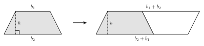
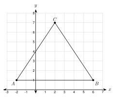

8.1 Area of Polygons and Composite Figures
- Find the area of a parallelogram, triangle, and trapezoid
- Find the area of a regular polygon with its apothem
- Find the area of a composite figure by adding and subtracting
- Find a missing length when you know the area
Warm-Up
1.
2.
3.
8.1.1Parallelograms, Triangles, and Trapezoids
- Area counts the that cover a flat shape.
- The height is measured at a to the base. It is not the .
- Parallelogram: cut off a triangle and move it. You get a , so A = .
- Two triangles make a parallelogram, so A = .
- Two trapezoids make a parallelogram with base b1 + b2, so A = .




Base = Height =
The 10 ft side is .
A = bh =
Her mistake:
Correct area:

A and B have the same y, so AB is .
b = 6 − (−2) =
h = 7 − 1 =
A = 12bh =

b1 = b2 = h =
A = 12(b1 + b2)h
8.1.2Regular Polygons
- A regular polygon has equal and equal .
- The apothem a goes from the to the , at a right angle.
- Cut the polygon into triangles from the center. Each has base = a side and height = .
- A = , where P is the .

The center and a side make an equilateral triangle. The apothem cuts it into two .
Short leg = , so a =
P = 6 · 6 =
A = 12aP =
P = 8 · 12.5 =
A = 12aP =
8.1.3Composite Figures
- the areas of the parts.
- a missing part from a bigger shape.
Big rectangle:
Missing corner:
Area =
Cost =

Wall:
Window:
Door:
Paint:

Rectangle:
r = . Semicircle: 12π(5)2 =
A =
8.1.4Finding a Missing Length
- Write the with the lengths you know.
- Put in the .
- the equation. Check your answer.
12(x + (x + 4))(6) = 66
x = . The bases are .
1. The makes a right angle with the base. Never use the side.
2. A regular polygon has area 12aP. a is the and P is the .
3. For a composite figure, the parts or the missing piece.
Practice
Parallelograms, Triangles, and Trapezoids
1. A parallelogram has base 11 cm, height 6 cm, and a slanted side of 7 cm.
2. A triangle has base 15 m and height 8 m.
3. A trapezoid has parallel sides 7 in and 13 in. The height is 5 in.
4. A rectangle is 3.5 ft by 12 ft.
5. Find the area of the triangle with vertices D(1, 2), E(9, 2), F(4, 8).
6. Find the area of the trapezoid with vertices (0, 0), (8, 0), (6, 5), (2, 5).
7. Find the mistake. Hnin says a parallelogram with base 10 in, slanted side 6 in, and height 5 in has area 10 · 6 = 60 square inches. What is the correct area?
Regular Polygons
8. A regular hexagon has side 8 in. Find the exact area and the area rounded to the nearest tenth.
9. A regular octagon has side 10 cm and apothem 12.1 cm. Find its area.
10. A regular pentagon has side 14 cm and apothem 9.6 cm. Find its area.
11. A regular polygon has perimeter 60 in and area 150 square inches. Find its apothem.
Composite Figures

12. Find the area of this L-shaped floor.
13. Find the area of this shape.

14. This window is a rectangle with a semicircle on top. Find the area. Round to the nearest tenth.
15. A wall is 20 ft by 9 ft. It has two windows, each 3 ft by 4 ft, and a door 3 ft by 7 ft. Find the area to paint.
16. A yard is 40 ft by 30 ft. A patio 12 ft by 10 ft is in the yard. Sod covers the rest and costs $0.45 per square foot. How much does the sod cost?
17. Hnin tiles a floor 18 ft by 15 ft. She buys 10% more tile than the floor area to allow for cuts. Tile costs $2.75 per square foot. How much does she pay?
18. A stop sign is cut from a square sheet of metal 30 in by 30 in. The sign is a regular octagon with side 12.4 in and apothem 15 in. How many square inches of metal are left over?
Missing Lengths

19. The area of this trapezoid is 120 square feet. Find x.
20. A trapezoid has bases 2x and 4, and the height is 6. The area is 60. Find x.
21. A parallelogram has area 84 square meters, base 12 m, and height (x + 3) m. Find x.
22. A rectangle has perimeter 36 ft. Its length is twice its width. Find its area.
What Does the Figure Show?
23. A four-sided figure looks like a rectangle 8 ft by 5 ft. No angles are marked. Can you say its area is 40 square feet? Explain.
Test Practice
A. 16
B. 21
C. 42
D. 84
A. 27.7 square inches
B. 41.6 square inches
C. 55.4 square inches
D. 83.1 square inches